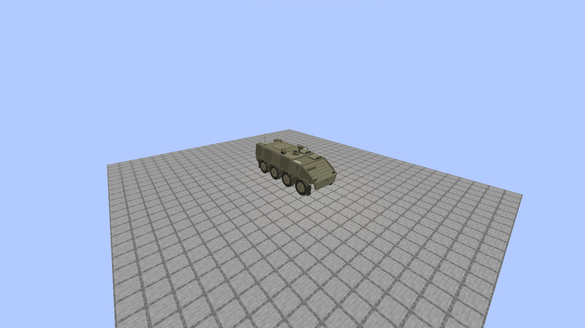
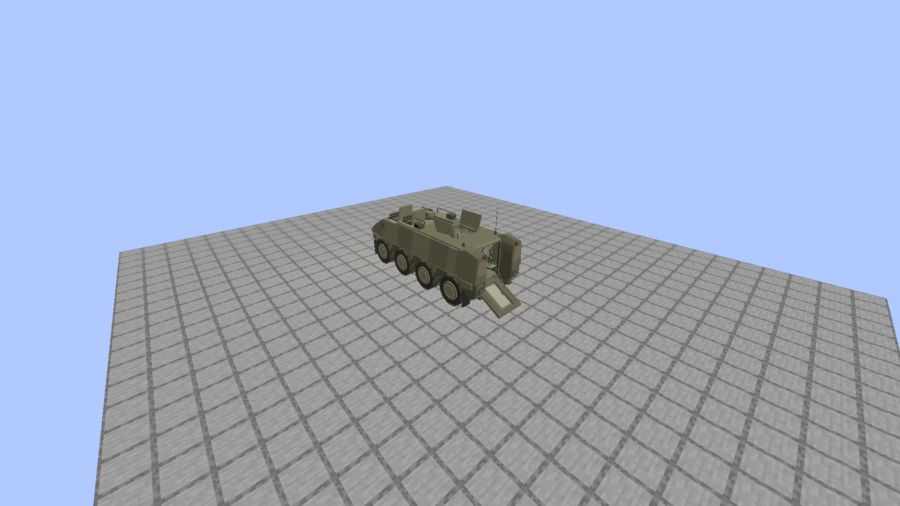
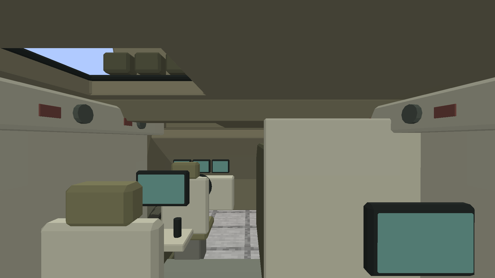
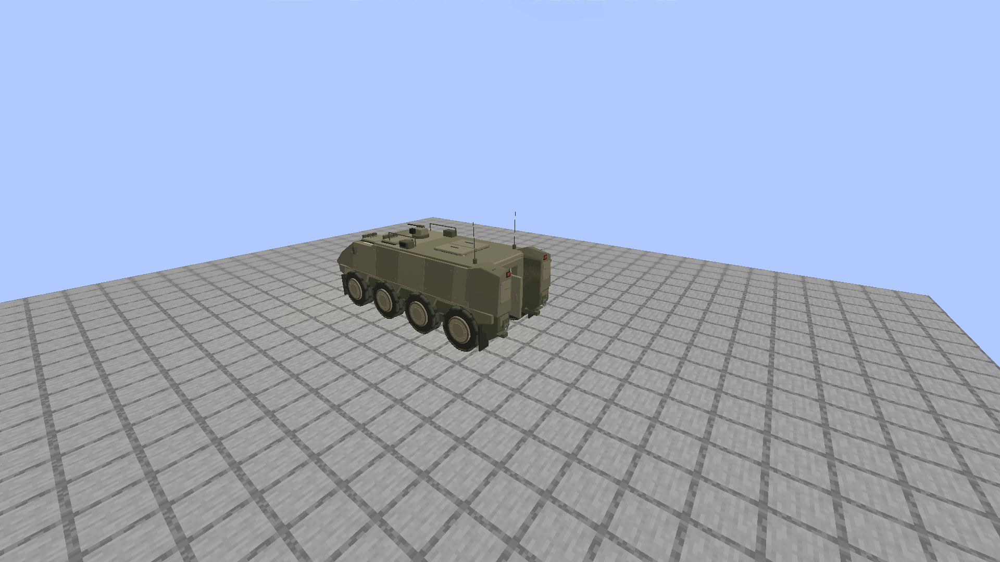
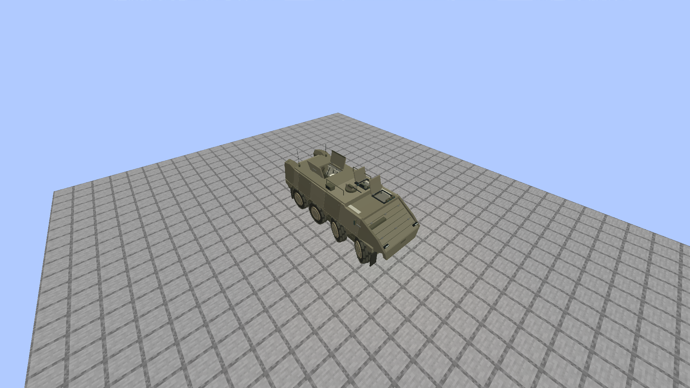

Eitan E01-R4 · настоящий клиент Minecraft
Полная сборка с DH, без шейдеров, ночного зрения и интерфейса. Проверены 120 ячеек и проход 2,64 м в приседе. Это неподвижная геометрическая сцена; ходовая часть Offroad ещё не реализована.

Minecraft · закрытая машина
Minecraft · посадка, аппарель и люки
Minecraft · реальный проход в приседе
Minecraft · отдельная дверь
Minecraft · положение обслуживания